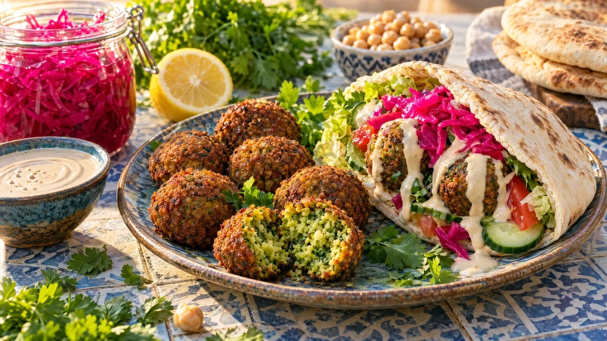

RESTFEST · RECEPTHuvudrätt
Ugnsbakade falafel med tahinisås och picklad rödkål
En påse torkade kikärtor, en lök och en stor näve örter mixas till en grön, kryddig smet som formas till små bollar och bakas krispiga i ugnen, utan frityr. De serveras i pitabröd med len tahinisås och knaprig, neonrosa picklad rödkål. Gatumat från Mellanöstern som går att förbereda dagen innan.
- Förberedelse
- 30 min + blötläggning över natten
- Tillagning
- 30 min
- Portioner
- 4 (ca 20 falafel)
- Nivå
- Medelsvårt
 Det här behöver du
Det här behöver du
JÄMFÖRT MED DIN KYL
Tryck på + vid det du behöver köpa.
Falafel
Picklad rödkål
Tahinisås
Till servering
Gör så här
- Lägg kikärtorna i rikligt med kallt vatten och låt dem stå över natten. Använd inte konserverade kikärtor, de är för blöta och falaflen faller isär.
- Strimla rödkålen tunt. Koka upp vatten, ättika, socker och salt, häll lagen över kålen och låt dra i minst 20 minuter.
- Rör ihop tahini, citronsaft och vitlök. Den stelnar först, men blir slät när du rör ner vattnet en matsked i taget. Smaka av med salt.
- Sätt ugnen på 200 grader. Klä en plåt med bakplåtspapper och pensla den med 1 msk olja.
- Häll av kikärtorna och torka dem lätt. Mixa dem i en matberedare med lök, vitlök, örter och kryddor till en grynig smet, som grovt sand. Den ska inte bli slät. Rör ner bakpulver och mjöl.
- Forma smeten till 20 små, platta bollar, ca 1 msk var, och lägg dem på plåten. Pensla med resten av oljan.
- Baka i mitten av ugnen i 25–30 minuter, tills falaflen är gyllene och krispig. Vänd dem halvvägs.
Dekoration och servering
- Värm pitabröden, fyll dem med sallad, gurka, tomat, 4–5 falafel och picklad rödkål, och ringla över tahinisås.
- Servera falaflen på ett fat med tahinisåsen i en skål och rödkålen i en annan, så att alla bygger själva.
- Den råa smeten kan formas en dag i förväg och stå övertäckt i kylen, eller frysas.
- Den picklade rödkålen håller en vecka i kylen.
Mått och ugnstemperaturer
Måtten är svenska (dl, msk, tsk, krm). Ugnstemperaturerna gäller vanlig ugn med över- och undervärme; med varmluft, sänk med 20 grader.